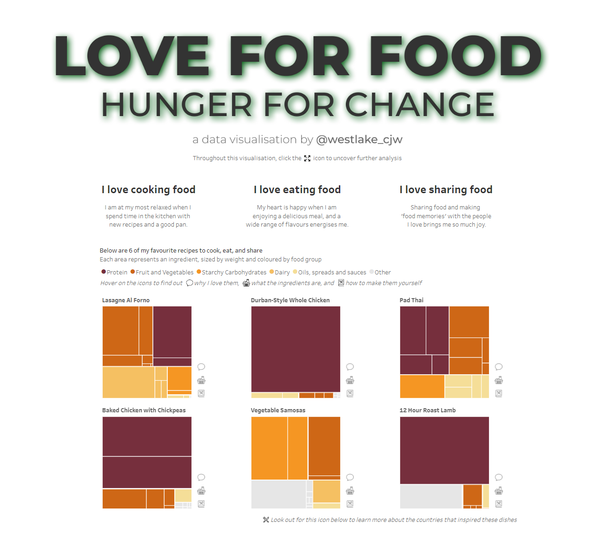
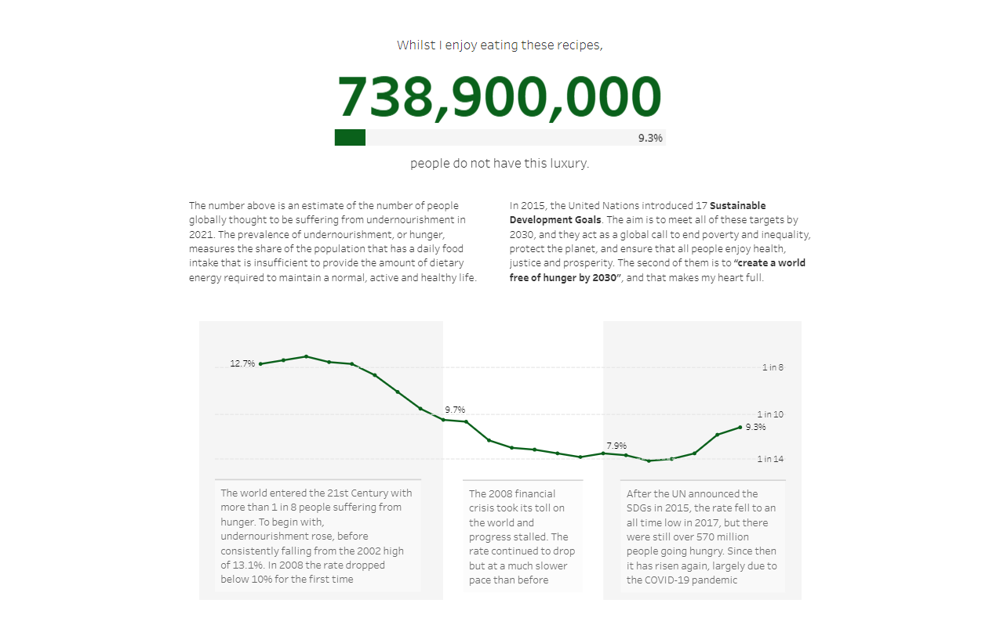
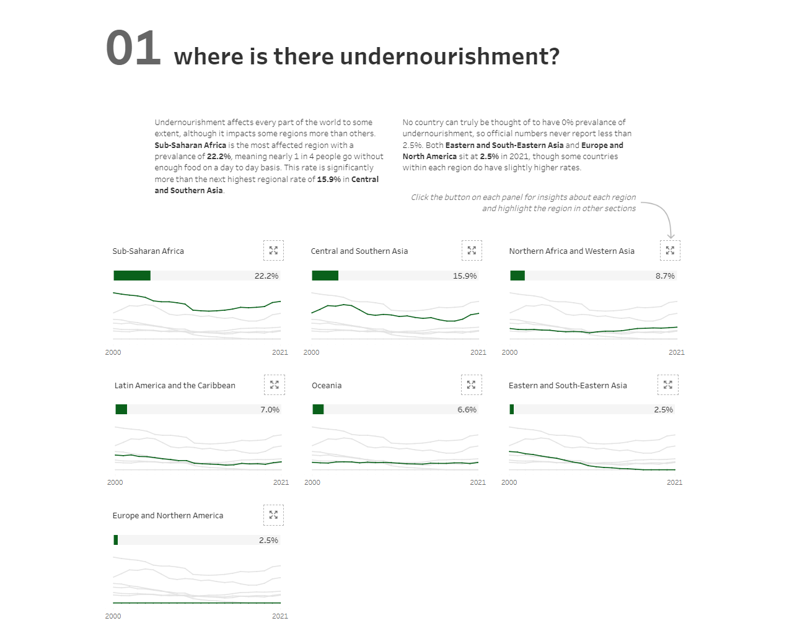
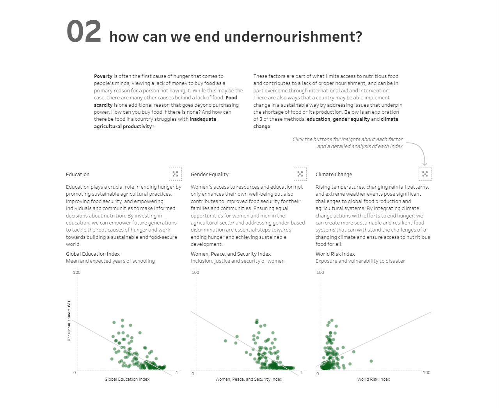
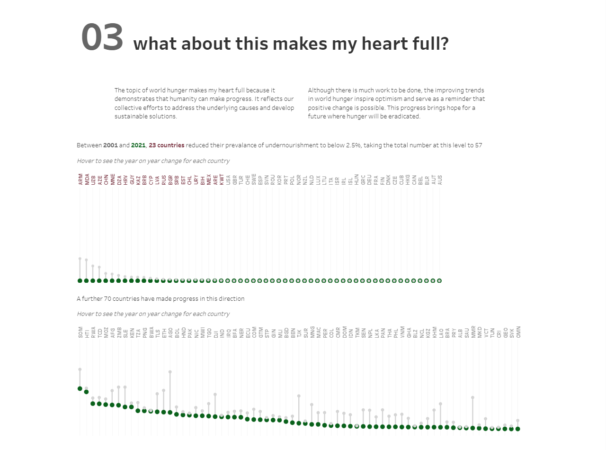
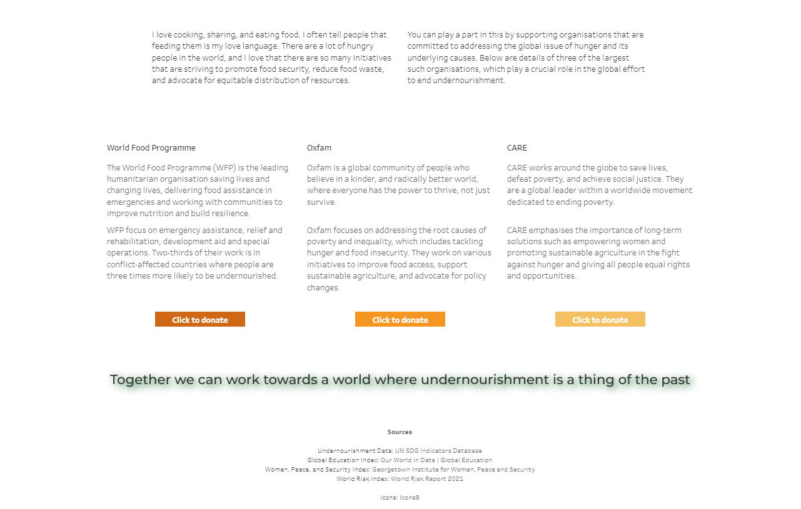

We are officially over halfway through the IronViz qualifier window for 2025! There is still plenty of time to put together an entry, and learn a whole lot about data visualisation in the process. In my previous blog posts I’ve looked at how you can come up with a great idea, and how to hit the brief for the analysis part of the judging criteria. This week, it’s time to look at storytelling.
Stories are all around us. They are what makes the world interesting to us, and being able to tell a good story can really set you apart. This is a key part of working with data, and one that goes way beyond IronViz. Storytelling is where we really add value to analysis and the underlying data that we are working with. So much has been said about this before and there are so many amazing resources out there. This blog post feels like I’ll be doing little more than repeating what others have said, but maybe it will be useful to look at it in the context of my last IronViz qualifier entry.
As a framework, I want to use the Pixar Story Structure. If you look at any Pixar movie they take the same general format. I think using the same structure for your IronViz entry (and any data viz project) is a sure-fire way to success. Let’s look at the Pixar Story Structure through the lens of a few films, and then see how I applied the same thing to my IronViz entry last year.
The Pixar Story Structure
The Beginning (Once Upon a Time… / Every day…)
Setting the scene is really important and allows the audience to connect with the characters and the storyline within. Without establishing the everyday routine, the event that kicks off the story has limited impact.
The Event (But One Day…)
At this point, something happens to throw things off balance. The equilibrium is disrupted. It forces action and sets up the rest of the story. This is where you really get people engaged in the story because they want to see things returned to the equilibrium point.
The Middle (Because of That…)
This makes up the bulk of the story, and there can be multiple “because of that…” stages. Keep adding to this section until the story has really developed and you have included everything that you wanted to. Explore the topic and really push the boundaries.
The Climax (Until Finally…)
Every story needs a climax. This is the point where you see the results of everything that happens above. In the middle sections, action is taken and we now get to see the results of this action.
The End (And, Ever Since Then…)
Everything now needs tying together. Things return to a new normal and the characters of the story return to a more settled life. The questions raised are usually answered. This ending could be happy or sad – it’s up to you! There may also be a call to action for the audience, or a moral takeaway.
Think about any film or book you have seen recently, and the chances are that these parts are in there. As an example, take Harry Potter. In the beginning, Harry is mistreated by his adoptive parents and every day sees him living a pretty grim existence. But one day, he discovers he’s a wizard and goes to Hogwarts. Because of this, he finds out about his true identity. Because of this, he finds out about Voldemort’s rise and the danger this causes the wizarding world. Because of this, he sets out to defeat Voldemort to protect the world that rescued him from his previous existence with the Dursleys. Until finally, he defeats Voldemort and ever since then the wizarding world can live in peace. It’s a simplified version of the story, but you can see that the steps are there.
Applying this to Data
Let’s now look at how this can feature in a visualisation. By applying this technique to my IronViz entry last year, I scored 4.89 out of 5 for the Storytelling section of the judging criteria.
The Beginning

The Event

The Middle and Climax


The End


//
By following this structure, I found that I was able to create an engaging story through my visualisation that guided the viewer through a series of questions. The questions are answered at each step through charts that use the data effectively to portray the information.
Storytelling is a topic that I struggle to write about, especially as there is so much other content out there. Hopefully something in here has been useful for your IronViz entry, and can also be applied to other visualisations that you create!
Take care // Chris